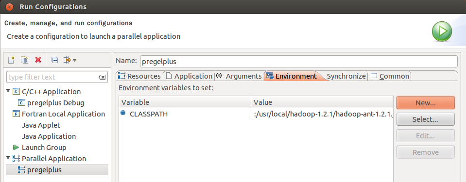

Configuring Eclipse IDE for Programming and Debugging
Prerequisites
We assume that a cluster is already set up as in the tutorial for Pregel+ deployment.
Alternatively, you may set up a single-node cluster in pseudo-distributed mode.
Download Eclipse IDE for Parallel Application Developers (Indigo) and extract it to a location of your choice.
Create a Pregel+ Project in Eclipse
Start Eclipse and choose a workspace of your choice.
Choose [File]−>[New]−>[C++ Project].
Input a project name of your choice, choose MPI Pi C++ Project and click [Finish].
Choose [Project]−>[Properties].

Choose [C/C++ Build]−>[Settings], then choose [GCC C++ Compiler]−>[Includes], and add the following three paths to Include paths (-l).
$HADOOP_HOME/src/c++/libhdfs
$JAVA_HOME/include
$JAVA_HOME/include/linux
(Use your absolute paths of $HADOOP_HOME and $JAVA_HOME instead of themselves)
Choose [GCC C++ Linker]−>[Libraries], and add the following path to Library serch path (-L).
[For 64-bit Linux] $HADOOP_HOME/c++/Linux-amd64-64/lib
[For 32-bit Linux] $HADOOP_HOME/c++/Linux-i386-32/lib
(Use your absolute path of $HADOOP_HOME instead of $HADOOP_HOME)

Choose [GCC C++ Linker]−>[Miscellaneous], and add the following path to Other objects.
[For 64-bit Linux]$HADOOP_HOME/c++/Linux-amd64-64/lib/libhdfs.a
$JAVA_HOME/jre/lib/amd64/server/libjvm.so
(Use your absolute paths of $HADOOP_HOME and $JAVA_HOME instead of themselves)
$HADOOP_HOME/c++/Linux-i386-32/lib/libhdfs.a
$JAVA_HOME/jre/lib/i386/server/libjvm.so
(Use your absolute paths of $HADOOP_HOME and $JAVA_HOME instead of themselves)
Choose [Run]−>[Run Configurations].

Create a C/C++ Appplication. In the Environment panel, click [New] to create a new environment CLASSPATH., and set its value to be that obtained from command echo $CLASSPATH.